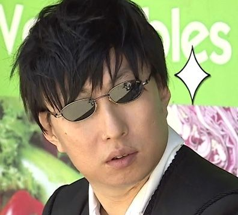
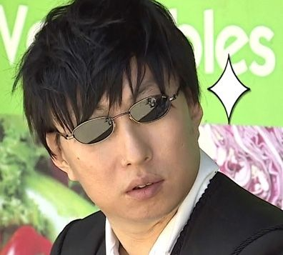

개그 실미도 편에 등장한 캐릭터
박명수의 머리숱과 눈썹만 채운(...) 모습이며
노홍철과 하하가 탄생시킨 박명수의 회춘 모습이다.
박명수는 두 모습 모두 보지 못한 상태로 고개를 까닥 거리거나, 외계적인 춤을 추며 천생 예능감을 보여주기도 했다.
설정상 미래소녀 명수는 약 백만년 후 미래에서 온 미인이라고.
이에 제작진은 "미래야 오지마라"라는 자막을 달기도 했다.
고유명수
뭔가 도전 할 때마다 맨 먼저 박명수가 하는 것에서 유래된 별명으로 '고유명사'의 변형이다.
앞에 고유가 붙는 별명은 모두 고유명수에서 유래된 것.
박명수를 보내서 게임의 난이도를 측정하기 때문이다.